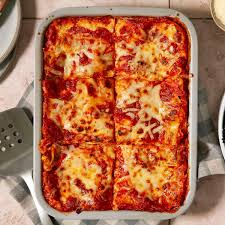

Lasagna

Description
Lasagna, also known as lasagne, is a type of pasta, possibly one of the oldest types, made in very wide, flat sheets.
The same-named Italian dish is made of stacked layers of lasagna alternating with fillings such as ragù, béchamel sauce, vegetables, cheeses, and seasonings and spices.
Ingredients
- Meat
- Onion
- Canned tomatoes
- Fresh Herbs
- spices
- seasonings
- Noodles
- Cheese
- Eggs
Steps
- Cook the ground meat in a skillet until browned and crumbly. Add the onion and continue cooking until it's translucent. Stir in the canned tomato products, half of the parsley, garlic, basil, 1.5 teaspoons of salt, oregano, and sugar.
- Boil the lasagna noodles in lightly salted water until they're al dente.
- Mix cottage cheese, Parmesan cheese, eggs, the remaining parsley, the remaining salt, and pepper in a bowl.
- Layer the ingredients according to the recipe (starting with sauce and ending with mozzarella) until the lasagna is assembled.
- Cover with foil and bake in the preheated oven for about half an hour. Remove the foil and continue baking until the top is golden brown.